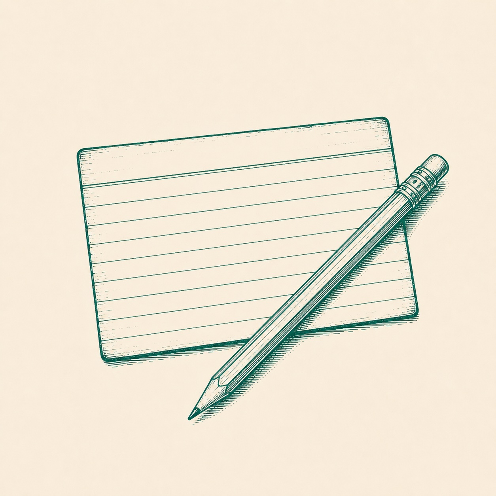

Daglig quiz · drevet av AI
Velg ditt tema.
Skreddersydde quizer på norsk, generert akkurat nå. Velg fra forslagene, eller skriv ditt eget tema — fra norsk middelalderhistorie til kvantefysikk eller 80-tallets popkultur.
0
Dager på rad
0
Tatt totalt
—
Snittskår
Foreslåtte tema
Velg ett — eller inntil 3. 0/3
Eller skriv ditt eget

Nivå
Antall spørsmål
Genererer quiz
Lager quiz
Noe gikk galt
Klarte ikke å generere quizen. Prøv igjen, eller velg et annet tema.
Kunne ikke nå AI-generatoren akkurat nå — viser en ferdiglaget quiz i mellomtiden.
Spørsmål 01 / 10
Kategori
Kategori
Spørsmålet kommer her
01 / 10
Resultat
Da var fasiten klar.
Din skår
0
av ti mulige
—
Gjennomgang av spørsmålene